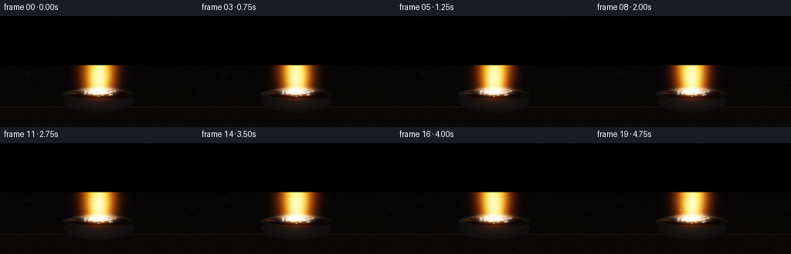
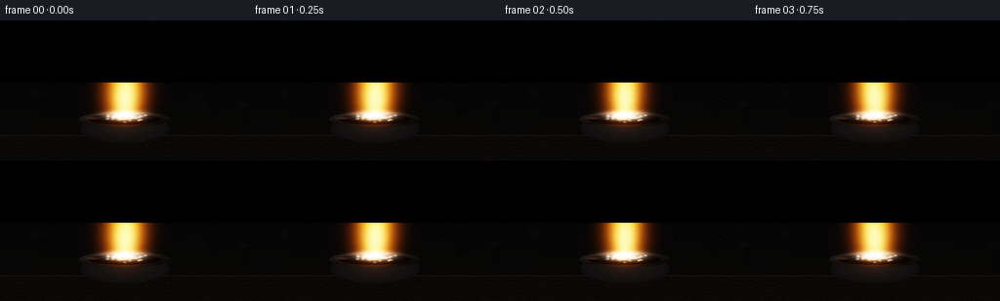
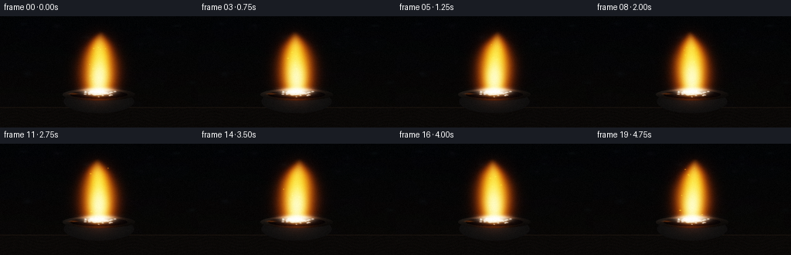
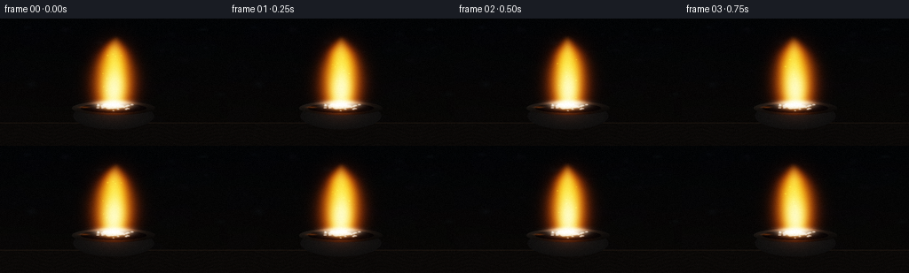
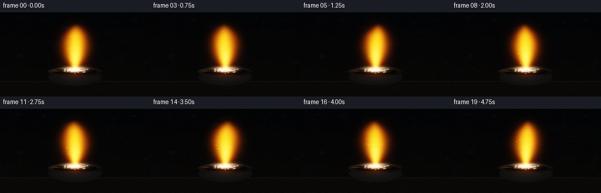
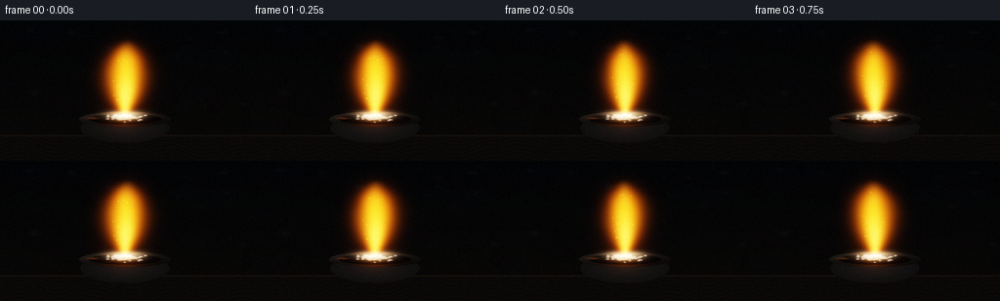

CODING AGENTS AS PIXEL WORLD MODELS
traex/DeepSeek-V4.1-Flash · material_0009
点击播放 · 原生 RGB 像素
逐轮保存的候选
回放视频、检查图与代码变化。
每份候选均可单独播放。实际图片检查记录在下方工具轨迹中。
候选 01播放与检查图
点击播放 · 原生 RGB 像素


展开代码变化
--- 上一保存版本
+++ 本次保存版本
@@ -0,0 +1,286 @@
+from pathlib import Path
+
+import numpy as np
+from PIL import Image, ImageDraw, ImageFilter
+from scipy.ndimage import gaussian_filter
+
+import artifact_io
+
+
+CASE_DIR = Path(__file__).resolve().parent
+WIDTH = 256
+HEIGHT = 144
+FRAMES = 20
+FPS = 4.0
+SS = 3
+W = WIDTH * SS
+H = HEIGHT * SS
+
+
+def smoothstep(edge0, edge1, value):
+ t = np.clip((value - edge0) / (edge1 - edge0), 0.0, 1.0)
+ return t * t * (3.0 - 2.0 * t)
+
+
+def ellipse(x, y, cx, cy, rx, ry):
+ return ((x - cx) / rx) ** 2 + ((y - cy) / ry) ** 2
+
+
+def make_background(x, y):
+ vertical = np.clip((y - 0.03) / 0.94, 0.0, 1.0)
+ top = np.array([0.010, 0.014, 0.020], dtype=np.float32)
+ bottom = np.array([0.030, 0.024, 0.020], dtype=np.float32)
+ rgb = top[None, None, :] * (1.0 - vertical[..., None])
+ rgb += bottom[None, None, :] * vertical[..., None]
+
+ wall = (
+ 0.52
+ + 0.18 * np.sin(9.0 * x + 2.2 * y)
+ + 0.13 * np.sin(19.0 * y - 3.4 * x)
+ + 0.08 * np.cos(31.0 * x + 13.0 * y)
+ )
+ rgb *= (0.88 + 0.14 * wall[..., None]).astype(np.float32)
+
+ # A few out-of-focus laboratory lights keep the dark background from going flat.
+ rng = np.random.default_rng(81)
+ for _ in range(16):
+ cx = float(rng.uniform(0.02, 0.98))
+ cy = float(rng.uniform(0.06, 0.66))
+ rx = float(rng.uniform(0.006, 0.024))
+ ry = rx * float(rng.uniform(0.55, 1.25))
+ strength = float(rng.uniform(0.012, 0.035))
+ tint = np.array(
+ [rng.uniform(0.35, 0.65), rng.uniform(0.43, 0.68), rng.uniform(0.56, 0.86)],
+ dtype=np.float32,
+ )
+ spot = np.exp(-ellipse(x, y, cx, cy, rx, ry) * 1.7)
+ rgb += spot[..., None] * tint * strength
+
+ table = smoothstep(0.805, 0.835, y)
+ grain = 0.5 + 0.5 * np.sin(210.0 * y + 7.0 * np.sin(21.0 * x))
+ table_color = np.array([0.030, 0.024, 0.020], dtype=np.float32)
+ table_color = table_color + 0.007 * grain[..., None]
+ rgb = rgb * (1.0 - table[..., None]) + table_color * table[..., None]
+
+ horizon = np.exp(-((y - 0.821) / 0.004) ** 2)
+ rgb += horizon[..., None] * np.array([0.055, 0.037, 0.024], dtype=np.float32)
+ return rgb
+
+
+def make_crucible_and_salt(x, y):
+ rgb = make_background(x, y)
+
+ rim_outer = ellipse(x, y, 0.500, 0.704, 0.184, 0.055)
+ rim_inner = ellipse(x, y, 0.500, 0.704, 0.145, 0.037)
+ body = ellipse(x, y, 0.500, 0.766, 0.178, 0.105)
+ body_mask = (body < 1.0) & (y > 0.700)
+ rim_mask = (rim_outer < 1.0) & (rim_inner >= 1.0)
+ opening_mask = rim_inner < 1.0
+
+ # Dark stoneware bowl with a narrow graphite lip.
+ body_radial = np.sqrt(np.clip(body, 0.0, 1.0))
+ body_shade = 0.030 + 0.032 * np.clip(1.0 - body_radial, 0.0, 1.0)
+ body_shade += 0.018 * smoothstep(0.70, 0.74, y)
+ body_color = np.stack(
+ [body_shade * 0.98, body_shade * 0.93, body_shade * 0.90], axis=-1
+ )
+ rgb = rgb * (1.0 - body_mask[..., None]) + body_color * body_mask[..., None]
+
+ rim_color = np.array([0.092, 0.080, 0.069], dtype=np.float32)
+ rim_light = 0.60 + 0.40 * np.clip((0.56 - x) / 0.23, 0.0, 1.0)
+ rim_light *= 0.55 + 0.45 * np.clip((0.728 - y) / 0.047, 0.0, 1.0)
+ rgb = rgb * (1.0 - rim_mask[..., None])
+ rgb += rim_mask[..., None] * rim_color * rim_light[..., None]
+
+ opening_color = np.array([0.012, 0.011, 0.012], dtype=np.float32)
+ rgb = rgb * (1.0 - opening_mask[..., None]) + opening_color * opening_mask[..., None]
+
+ # Warm reflected highlight on the left lip.
+ lip = np.exp(-((x - 0.372) / 0.021) ** 2 - ((y - 0.697) / 0.0065) ** 2)
+ rgb += lip[..., None] * np.array([0.30, 0.12, 0.028], dtype=np.float32)
+
+ salt_mask = np.zeros((H, W), dtype=np.float32)
+ pile = np.exp(-ellipse(x, y, 0.500, 0.691, 0.091, 0.032) * 1.35)
+ pile *= smoothstep(0.680, 0.664, y)
+ pile = np.clip(pile, 0.0, 1.0)
+ rgb = rgb * (1.0 - 0.70 * pile[..., None])
+ rgb += pile[..., None] * np.array([0.20, 0.205, 0.215], dtype=np.float32)
+
+ base_image = Image.fromarray(np.clip(rgb * 255.0, 0, 255).astype(np.uint8), "RGB")
+ crystal_layer = Image.new("RGBA", (W, H), (0, 0, 0, 0))
+ draw = ImageDraw.Draw(crystal_layer)
+ mask_image = Image.new("L", (W, H), 0)
+ mask_draw = ImageDraw.Draw(mask_image)
+ rng = np.random.default_rng(422)
+
+ def add_crystal(cx, cy, radius, tone, angle):
+ count = int(rng.integers(5, 8))
+ points = []
+ for index in range(count):
+ theta = angle + 2.0 * np.pi * index / count
+ jag = radius * float(rng.uniform(0.62, 1.18))
+ points.append(
+ (
+ int((cx + np.cos(theta) * jag * 1.20) * W),
+ int((cy + np.sin(theta) * jag * 0.78) * H),
+ )
+ )
+ color = tuple(int(v) for v in tone)
+ draw.polygon(points, fill=color + (255,))
+ mask_draw.polygon(points, fill=255)
+ edge = tuple(min(255, int(v * 1.22 + 12)) for v in tone)
+ draw.line(points + [points[0]], fill=edge + (220,), width=max(1, SS // 2))
+
+ # A central hot salt shard surrounded by a clearly granular pile.
+ add_crystal(0.500, 0.680, 0.024, (228, 226, 212), -0.35)
+ add_crystal(0.474, 0.685, 0.016, (196, 202, 207), 0.45)
+ add_crystal(0.526, 0.688, 0.015, (214, 210, 198), 0.10)
+ for _ in range(62):
+ cx = float(rng.normal(0.500, 0.047))
+ cy = float(rng.normal(0.692, 0.013))
+ if ellipse(np.array(cx), np.array(cy), 0.500, 0.692, 0.090, 0.031) > 1.08:
+ continue
+ radius = float(rng.uniform(0.0038, 0.0090))
+ brightness = int(rng.uniform(145, 236))
+ tone = (
+ brightness,
+ min(255, brightness + int(rng.uniform(-8, 9))),
+ min(255, brightness + int(rng.uniform(0, 18))),
+ )
+ add_crystal(cx, cy, radius, tone, float(rng.uniform(0.0, np.pi)))
+
+ crystal_layer = crystal_layer.filter(ImageFilter.GaussianBlur(radius=0.35 * SS))
+ base_image = Image.alpha_composite(base_image.convert("RGBA"), crystal_layer).convert("RGB")
+ rgb = np.asarray(base_image, dtype=np.float32) / 255.0
+ salt_mask = np.asarray(mask_image, dtype=np.float32) / 255.0
+
+ # Soften only the crystal silhouette while retaining its faceted interiors.
+ salt_light = gaussian_filter(salt_mask, sigma=1.8 * SS)
+ return rgb, rim_mask.astype(np.float32), salt_mask, salt_light
+
+
+def render_frame(index, base, rim_mask, salt_mask, salt_light):
+ t = index / FPS
+ y, x = np.mgrid[0:H, 0:W].astype(np.float32)
+ x = (x + 0.5) / W
+ y = (y + 0.5) / H
+
+ base_y = 0.682
+ top_y = 0.142
+ s = (base_y - y) / (base_y - top_y)
+ valid = (s > -0.04) & (s < 1.08)
+ sc = np.clip(s, 0.0, 1.0)
+
+ center = (
+ 0.500
+ + 0.0105 * np.sin(2.0 * np.pi * 0.88 * t + 0.5) * sc**1.6
+ + 0.0050 * np.sin(2.0 * np.pi * 1.67 * t + 1.3) * sc**2.3
+ + 0.0030 * np.sin(2.0 * np.pi * 3.20 * t + 7.0 * sc) * sc**3.0
+ )
+ halfwidth = 0.069 * (1.0 + 0.30 * np.sin(np.pi * sc) ** 0.85 - 0.70 * sc**2.25)
+ halfwidth *= 0.985 + 0.035 * np.sin(2.0 * np.pi * 1.2 * t + 0.8)
+ halfwidth = np.maximum(halfwidth, 0.004)
+
+ turbulence = (
+ np.sin(19.0 * x - 9.0 * y + 2.4 * t)
+ + 0.55 * np.sin(37.0 * x + 13.0 * y - 4.1 * t)
+ + 0.30 * np.cos(63.0 * x - 23.0 * y + 7.3 * t)
+ )
+ q = (x - center) / halfwidth + 0.055 * turbulence * sc**1.3
+ vertical = smoothstep(0.0, 0.065, s) * smoothstep(1.03, 0.72, s)
+ vertical *= 1.0 + 0.035 * np.sin(2.0 * np.pi * 1.15 * t)
+
+ outer = np.exp(-1.55 * q**2) * vertical * valid
+ mid = np.exp(-2.80 * q**2) * vertical * valid
+ core = np.exp(-5.2 * q**2) * vertical * valid
+
+ core_height = np.exp(-((sc - 0.225) / 0.255) ** 2)
+ mid_height = np.exp(-((sc - 0.365) / 0.390) ** 2)
+ tongue = 0.55 * np.exp(-((sc - 0.610) / 0.190) ** 2)
+ core *= 0.22 + 1.35 * core_height
+ mid *= 0.40 + 0.92 * mid_height + tongue
+
+ base_heat = np.exp(
+ -((x - 0.500) / 0.055) ** 2 - ((y - 0.674) / 0.026) ** 2
+ )
+ base_heat *= 0.94 + 0.06 * np.sin(2.0 * np.pi * 2.4 * t)
+ base_heat += 0.45 * np.exp(
+ -((x - 0.493) / 0.028) ** 2 - ((y - 0.681) / 0.013) ** 2
+ )
+
+ outer_color = np.array([1.00, 0.255, 0.008], dtype=np.float32)
+ mid_color = np.array([1.00, 0.620, 0.018], dtype=np.float32)
+ core_color = np.array([1.00, 0.965, 0.560], dtype=np.float32)
+ hot_color = np.array([1.00, 1.000, 0.900], dtype=np.float32)
+
+ emission = outer[..., None] * outer_color * 1.12
+ emission += mid[..., None] * mid_color * 0.82
+ emission += core[..., None] * core_color * 1.12
+ emission += base_heat[..., None] * hot_color * 2.30
+
+ # Sparse sparks travel through the upper half of the frame.
+ spark_rng = np.random.default_rng(1200 + index)
+ spark_rgb = np.zeros((H, W, 3), dtype=np.float32)
+ for _ in range(13):
+ phase = (float(spark_rng.uniform(0.02, 0.98)) + t * float(spark_rng.uniform(0.10, 0.19))) % 1.0
+ sx = 0.500 + float(spark_rng.normal(0.0, 0.020)) + 0.018 * np.sin(
+ 2.0 * np.pi * (phase * 0.8 + spark_rng.uniform(0.0, 1.0))
+ )
+ sy = base_y - phase * float(spark_rng.uniform(0.31, 0.49))
+ radius = float(spark_rng.uniform(0.0018, 0.0040))
+ flicker = 0.45 + 0.55 * np.sin(np.pi * phase) ** 2
+ spot = np.exp(-((x - sx) ** 2 + (y - sy) ** 2) / (radius**2))
+ spark_rgb += spot[..., None] * np.array([1.0, 0.52, 0.055], dtype=np.float32) * flicker
+
+ flame_energy = np.clip(outer * 0.55 + mid * 0.85 + core + base_heat * 1.5, 0.0, 3.0)
+ local_bloom = gaussian_filter(flame_energy, sigma=0.020 * H)
+ wide_bloom = gaussian_filter(flame_energy, sigma=0.075 * H)
+ bloom = local_bloom[..., None] * np.array([1.0, 0.39, 0.020], dtype=np.float32) * 0.32
+ bloom += wide_bloom[..., None] * np.array([1.0, 0.24, 0.010], dtype=np.float32) * 0.30
+
+ warm_light = gaussian_filter(flame_energy, sigma=0.060 * H)
+ warm_light = np.clip(warm_light * 1.35, 0.0, 1.4)
+ salt_glow = salt_light * warm_light
+ rim_glow = rim_mask * warm_light
+
+ scene = base.copy()
+ scene += bloom
+ scene += spark_rgb * 2.1
+ scene += salt_mask[..., None] * np.array([1.0, 0.48, 0.055], dtype=np.float32) * 0.20
+ scene += salt_glow[..., None] * np.array([1.0, 0.47, 0.045], dtype=np.float32) * 1.05
+ scene += rim_glow[..., None] * np.array([1.0, 0.31, 0.025], dtype=np.float32) * 0.38
+ scene += emission
+
+ # Gentle filmic shoulder keeps the hot center luminous without flattening it.
+ scene = 1.0 - np.exp(-1.34 * np.maximum(scene, 0.0))
+ scene = np.clip(scene, 0.0, 1.0)
+
+ # Fine, low-amplitude sensor grain.
+ grain = spark_rng.normal(0.0, 1.0, (H, W)).astype(np.float32)
+ scene += grain[..., None] * 0.0035
+ scene = np.clip(scene, 0.0, 1.0)
+
+ image = Image.fromarray((scene * 255.0 + 0.5).astype(np.uint8), "RGB")
+ image = image.resize((WIDTH, HEIGHT), Image.Resampling.LANCZOS)
+ frame = np.asarray(image, dtype=np.uint8)
+
+ # A final one-pixel grain pass survives the downscale and adds a photographic finish.
+ output_grain = np.random.default_rng(9000 + index).normal(0.0, 1.0, (HEIGHT, WIDTH, 1))
+ frame = np.clip(frame.astype(np.float32) + output_grain * 1.2, 0, 255).astype(np.uint8)
+ return frame
+
+
+def main():
+ y, x = np.mgrid[0:H, 0:W].astype(np.float32)
+ x = (x + 0.5) / W
+ y = (y + 0.5) / H
+ base, rim_mask, salt_mask, salt_light = make_crucible_and_salt(x, y)
+ frames = [
+ render_frame(index, base, rim_mask, salt_mask, salt_light)
+ for index in range(FRAMES)
+ ]
+ artifact_io.save(np.stack(frames), CASE_DIR)
+
+
+if __name__ == "__main__":
+ main()
候选 02播放与检查图
点击播放 · 原生 RGB 像素


展开代码变化
--- 上一保存版本
+++ 本次保存版本
@@ -106,7 +106,7 @@
rgb = rgb * (1.0 - 0.70 * pile[..., None])
rgb += pile[..., None] * np.array([0.20, 0.205, 0.215], dtype=np.float32)
- base_image = Image.fromarray(np.clip(rgb * 255.0, 0, 255).astype(np.uint8), "RGB")
+ base_image = Image.fromarray(np.clip(rgb * 255.0, 0, 255).astype(np.uint8))
crystal_layer = Image.new("RGBA", (W, H), (0, 0, 0, 0))
draw = ImageDraw.Draw(crystal_layer)
mask_image = Image.new("L", (W, H), 0)
@@ -177,7 +177,8 @@
+ 0.0050 * np.sin(2.0 * np.pi * 1.67 * t + 1.3) * sc**2.3
+ 0.0030 * np.sin(2.0 * np.pi * 3.20 * t + 7.0 * sc) * sc**3.0
)
- halfwidth = 0.069 * (1.0 + 0.30 * np.sin(np.pi * sc) ** 0.85 - 0.70 * sc**2.25)
+ bulge = np.clip(np.sin(np.pi * sc), 0.0, 1.0) ** 0.85
+ halfwidth = 0.069 * (1.0 + 0.30 * bulge - 0.70 * sc**2.25)
halfwidth *= 0.985 + 0.035 * np.sin(2.0 * np.pi * 1.2 * t + 0.8)
halfwidth = np.maximum(halfwidth, 0.004)
@@ -260,7 +261,7 @@
scene += grain[..., None] * 0.0035
scene = np.clip(scene, 0.0, 1.0)
- image = Image.fromarray((scene * 255.0 + 0.5).astype(np.uint8), "RGB")
+ image = Image.fromarray((scene * 255.0 + 0.5).astype(np.uint8))
image = image.resize((WIDTH, HEIGHT), Image.Resampling.LANCZOS)
frame = np.asarray(image, dtype=np.uint8)
候选 03播放与检查图
点击播放 · 原生 RGB 像素

展开代码变化
--- 上一保存版本
+++ 本次保存版本
@@ -178,8 +178,8 @@
+ 0.0030 * np.sin(2.0 * np.pi * 3.20 * t + 7.0 * sc) * sc**3.0
)
bulge = np.clip(np.sin(np.pi * sc), 0.0, 1.0) ** 0.85
- halfwidth = 0.069 * (1.0 + 0.30 * bulge - 0.70 * sc**2.25)
- halfwidth *= 0.985 + 0.035 * np.sin(2.0 * np.pi * 1.2 * t + 0.8)
+ halfwidth = 0.014 + 0.060 * bulge + 0.018 * sc**2
+ halfwidth *= 0.975 + 0.045 * np.sin(2.0 * np.pi * 1.2 * t + 0.8)
halfwidth = np.maximum(halfwidth, 0.004)
turbulence = (
@@ -209,15 +209,15 @@
-((x - 0.493) / 0.028) ** 2 - ((y - 0.681) / 0.013) ** 2
)
- outer_color = np.array([1.00, 0.255, 0.008], dtype=np.float32)
- mid_color = np.array([1.00, 0.620, 0.018], dtype=np.float32)
- core_color = np.array([1.00, 0.965, 0.560], dtype=np.float32)
- hot_color = np.array([1.00, 1.000, 0.900], dtype=np.float32)
+ outer_color = np.array([1.00, 0.235, 0.006], dtype=np.float32)
+ mid_color = np.array([1.00, 0.585, 0.014], dtype=np.float32)
+ core_color = np.array([1.00, 0.870, 0.230], dtype=np.float32)
+ hot_color = np.array([1.00, 0.975, 0.720], dtype=np.float32)
emission = outer[..., None] * outer_color * 1.12
emission += mid[..., None] * mid_color * 0.82
- emission += core[..., None] * core_color * 1.12
- emission += base_heat[..., None] * hot_color * 2.30
+ emission += core[..., None] * core_color * 0.96
+ emission += base_heat[..., None] * hot_color * 1.42
# Sparse sparks travel through the upper half of the frame.
spark_rng = np.random.default_rng(1200 + index)
候选 04播放与检查图
候选 05播放与检查图
点击播放 · 原生 RGB 像素


展开代码变化
--- 上一保存版本
+++ 本次保存版本
@@ -220,7 +220,7 @@
emission += base_heat[..., None] * hot_color * 1.42
# Sparse sparks travel through the upper half of the frame.
- spark_rng = np.random.default_rng(1200 + index)
+ spark_rng = np.random.default_rng(1200)
spark_rgb = np.zeros((H, W, 3), dtype=np.float32)
for _ in range(13):
phase = (float(spark_rng.uniform(0.02, 0.98)) + t * float(spark_rng.uniform(0.10, 0.19))) % 1.0
@@ -257,7 +257,7 @@
scene = np.clip(scene, 0.0, 1.0)
# Fine, low-amplitude sensor grain.
- grain = spark_rng.normal(0.0, 1.0, (H, W)).astype(np.float32)
+ grain = np.random.default_rng(7000 + index).normal(0.0, 1.0, (H, W)).astype(np.float32)
scene += grain[..., None] * 0.0035
scene = np.clip(scene, 0.0, 1.0)
可观测工具轨迹
实际执行的命令与返回图片。
命令 1exit 0
/bin/bash -c "pwd && rg --files -g 'prompt.txt' -g 'GENERATION_RULES.md' -g 'task_spec.json' -g '"'!node_modules'"' -g '"'!vendor'"'"
命令 2exit 0
/bin/bash -c "git status --short && find . -maxdepth 2 -type f -printf '%p\\n' | sort | head -200"
命令 3exit 0
/bin/bash -c 'cat prompt.txt'
命令 4exit 0
/bin/bash -c 'cat GENERATION_RULES.md'
命令 5exit 0
/bin/bash -c 'cat task_spec.json'
命令 6exit 0
/bin/bash -c "sed -n '1,240p' artifact_io.py && sed -n '1,160p' player_template.html"
命令 7exit 0
/bin/bash -c "command -v chafa || true; command -v viu || true; command -v img2txt || true; command -v ffmpeg || true; python - <<'PY'
import numpy, PIL
print('numpy', numpy.__version__)
print('PIL', PIL.__version__)
try:
import scipy; print('scipy', scipy.__version__)
except Exception as e: print('no scipy', e)
PY"命令 8exit 0
/bin/bash -c 'python generate.py'
命令 9exit 0
/bin/bash -c "python - <<'PY'
from PIL import Image
im=Image.open('inspection.png')
im.resize((1024, im.height*2), Image.Resampling.NEAREST).save('inspection_large.png')
for i in [0,7,14,19]:
a=Image.open(f'frames/{i:02d}.png')
print(i, a.getextrema())
PY"命令 10exit 0
/bin/bash -c "python generate.py && python - <<'PY'
from PIL import Image
import numpy as np
im=Image.open('inspection.png')
im.resize((1024, im.height*2), Image.Resampling.NEAREST).save('inspection_large.png')
for i in [0,7,14,19]:
a=np.asarray(Image.open(f'frames/{i:02d}.png')).astype(float)
print(i, 'mean', a.mean(axis=(0,1)).round(2), 'max', a.max(), 'yellow px', ((a[:,:,0]>180)&(a[:,:,1]>90)&(a[:,:,2]<100)).sum())
PY"命令 11exit 0
/bin/bash -c "python - <<'PY'
from PIL import Image, ImageDraw, ImageFont
import numpy as np
frames=[Image.open(f'frames/{i:02d}.png') for i in range(20)]
sheet=Image.new('RGB',(256*4,144*5),(20,22,25))
for i,im in enumerate(frames): sheet.paste(im,((i%4)*256,(i//4)*144))
sheet.save('all_frames.png')
# Difference metrics and bounding boxes
prev=None
for i,im in enumerate(frames):
a=np.asarray(im).astype(np.int16)
if prev is not None:
d=np.abs(a-prev).max(2)
yy,xx=np.where(d>12)
print(f'{i:02d} change>12 {len(xx):5d} bbox {(xx.min(),yy.min(),xx.max(),yy.max()) if len(xx) else None}')
prev=a
PY"命令 12exit 0
/bin/bash -c "python - <<'PY'
from PIL import Image
import numpy as np
for fi in [0,5,10,19]:
a=np.asarray(Image.open(f'frames/{fi:02d}.png')).astype(float)
# crop x 82:170, y 8:124; downsample blocks 2x2
crop=a[8:124,82:170]
h,w=crop.shape[:2]
crop=crop[:h//2*2,:w//2*2].reshape(h//2,2,w//2,2,3).mean((1,3))
print('\\nFRAME',fi)
for row in crop[::2]:
line=''
for r,g,b in row[::2]:
if r>225 and g>215 and b>150: ch='#'
elif r>220 and g>160: ch='Y'
elif r>150 and g>65: ch='O'
elif r>75 and g>38: ch='o'
elif max(r,g,b)<18: ch=' '
elif max(r,g,b)<38: ch='.'
elif max(r,g,b)<70: ch=':'
elif b>r*1.15: ch='c'
else: ch='-'
line+=ch
print(line)
PY"命令 13exit 0
/bin/bash -c "python - <<'PY'
from PIL import Image
import numpy as np
im=np.asarray(Image.open('frames/00.png')).astype(float)
# print rows of local maxima around flame and source
for y in [10,20,30,40,50,60,70,80,90,97,100,105]:
r=im[y]
mx=r.max(1)
xs=np.where(mx>35)[0]
if len(xs): print(y, xs.min(), xs.max(), int(xs[np.argmax(mx[xs])]), int(mx.max()), r[int(xs[np.argmax(mx[xs])])].astype(int))
# colors source region
for xy in [(128,96),(128,92),(128,99),(115,96),(140,96),(120,90),(128,80),(128,60),(128,35)]:
x,y=xy; print(xy, im[y,x].astype(int))
PY"命令 14exit 0
/bin/bash -c "python - <<'PY'
from PIL import Image
import numpy as np
im=np.asarray(Image.open('frames/00.png')).astype(float)
# use luminance-ish; print color map crop wider x 75..180 y 5..120
chars=' .:-=+*oO#@'
for y in range(6,122,3):
row=im[y,72:184:2]
lum=(.2126*row[:,0]+.7152*row[:,1]+.0722*row[:,2])/255
line=''.join(chars[min(9,int(v*10))] for v in lum)
print(f'{y:03d} {line}')
PY"命令 15exit 0
/bin/bash -c "python generate.py && python - <<'PY'
from PIL import Image
import numpy as np
im=np.asarray(Image.open('frames/00.png')).astype(float)
chars=' .:-=+*oO#@'
for y in range(6,122,3):
row=im[y,72:184:2]
lum=(.2126*row[:,0]+.7152*row[:,1]+.0722*row[:,2])/255
print(f'{y:03d} '+''.join(chars[min(9,int(v*10))] for v in lum))
print('source', im[96,128].astype(int), 'flame mid', im[60,128].astype(int), 'tip', im[35,128].astype(int))
PY"命令 16exit 0
/bin/bash -c "python - <<'PY'
from PIL import Image
import numpy as np
im=np.asarray(Image.open('frames/00.png')).astype(float)
chars=' .,:;irsXA253hMHGS#9B&@'
# full frame, 2x3 block downsample
h,w=im.shape[:2]
blocks=im[:h//3*3,:w//2*2].reshape(h//3,3,w//2,2,3).mean((1,3))
lum=.2126*blocks[:,:,0]+.7152*blocks[:,:,1]+.0722*blocks[:,:,2]
for y,row in enumerate(lum):
print(f'{y*3:03d} '+''.join(chars[min(len(chars)-1,int(v/255*len(chars)))] for v in row))
PY"命令 17exit 0
/bin/bash -c "python - <<'PY'
from PIL import Image
import numpy as np
im=np.asarray(Image.open('frames/00.png')).astype(float)
# Color and luminance slices through source/crucible
for y in [88,91,94,96,98,100,102,105,110,115]:
row=im[y]
lum=.2126*row[:,0]+.7152*row[:,1]+.0722*row[:,2]
xs=np.where(lum>25)[0]
print('row',y,'range', (xs.min(),xs.max()) if len(xs) else None)
# source region unique colors and occupancy
crop=im[86:106,102:154]
print('source mean/max/min',crop.mean((0,1)), crop.max((0,1)), crop.min((0,1)))
# central vertical source colors
for y in range(88,106):
print(y, im[y,128].astype(int), im[y,110].astype(int), im[y,146].astype(int))
PY"命令 18exit 0
/bin/bash -c "python - <<'PY'
from PIL import Image
import numpy as np
for fi in [0,10,19]:
im=np.asarray(Image.open(f'frames/{fi:02d}.png'))
q=(im//16)*16
colors,c=np.unique(q.reshape(-1,3),axis=0,return_counts=True)
order=np.argsort(c)[-16:][::-1]
print('FRAME',fi)
for i in order:
print(tuple(colors[i]), int(c[i]))
PY"命令 19exit 0
/bin/bash -c "python - <<'PY'
from PIL import Image
import numpy as np
im=np.asarray(Image.open('frames/00.png')).astype(float)
# exact grayscale block values around source
for y in range(86,108,2):
vals=[]
for x in range(100,157,4):
p=im[y:y+2,x:x+4]
vals.append(int((.2126*p[:,:,0]+.7152*p[:,:,1]+.0722*p[:,:,2]).mean()))
print(y,vals)
PY"命令 20exit 0
/bin/bash -c "python - <<'PY'
from PIL import Image
import numpy as np
im=np.asarray(Image.open('frames/00.png')).astype(float)
# central source silhouette and colors with row scan
for y in range(88,104):
row=im[y]
lum=.2126*row[:,0]+.7152*row[:,1]+.0722*row[:,2]
xs=np.where(lum>130)[0]
print(y, (int(xs.min()),int(xs.max())) if len(xs) else None, row[128].astype(int))
PY"命令 21exit 0
/bin/bash -c 'python generate.py'
命令 22exit 0
/bin/bash -c "python - <<'PY'
from pathlib import Path
import base64, json, re
import numpy as np
from PIL import Image
spec=json.loads(Path('task_spec.json').read_text())
frames=np.stack([np.asarray(Image.open(f'frames/{i:02d}.png')) for i in range(spec['frames'])])
assert frames.shape==(20,144,256,3) and frames.dtype==np.uint8
z=np.load('pixels.npz')['pixels']
assert z.shape==(144,256,20)
expected=(frames[:,:,:,0].astype(np.uint32)<<16)|(frames[:,:,:,1].astype(np.uint32)<<8)|frames[:,:,:,2]
assert np.array_equal(z, expected.transpose(1,2,0))
html=Path('index.html').read_text()
m=re.search(r\"const DATA=(\\{.*?\\}),W=DATA\",html)
assert m
payload=json.loads(m.group(1))
assert (payload['width'],payload['height'],payload['frames'],payload['fps'])==(256,144,20,4.0)
assert len(payload['deltas'])==19 and payload['audio'] is None
assert payload['caption']==Path('prompt.txt').read_text().strip()
first=np.frombuffer(base64.b64decode(payload['first']),dtype='<u4').reshape(144,256)
assert np.array_equal(first, expected[0])
cur=first.copy()
for i,d in enumerate(payload['deltas'],1):
p=np.frombuffer(base64.b64decode(d),dtype='<u4')
j=0
while j<len(p): start,count=int(p[j]),int(p[j+1]); cur.reshape(-1)[start:start+count]=p[j+2:j+2+count]; j+=count+2
assert np.array_equal(cur,expected[i]), i
# motion and exposure checks
means=frames.mean((1,2,3))
diffs=np.abs(np.diff(frames.astype(np.int16),axis=0)).mean((1,2,3))
assert 12 < means.min() < means.max() < 45
assert diffs.min() > 0.4 and diffs.max() < 8
print('validated frames:', frames.shape)
print('mean luminance range:', round(float(means.min()),2), '-', round(float(means.max()),2))
print('temporal mean diff range:', round(float(diffs.min()),3), '-', round(float(diffs.max()),3))
print('unique colors frame 0:', len(np.unique(frames[0].reshape(-1,3),axis=0)))
print('artifacts:', sorted(p.name for p in Path('.').iterdir() if p.is_file()))
PY"命令 23exit 0
/bin/bash -c "python - <<'PY'
from pathlib import Path
for name in ('all_frames.png', 'inspection_large.png'):
path = Path(name)
if path.exists():
path.unlink()
print('temporary inspection images removed')
PY
ls -lh index.html pixels.npz inspection.png transition_check.png frames/00.png
git status --short -- ."保存候选 5 份；完成命令 23 次；可验证图片返回 0 张。原始 API 响应与完整日志保留在本地。